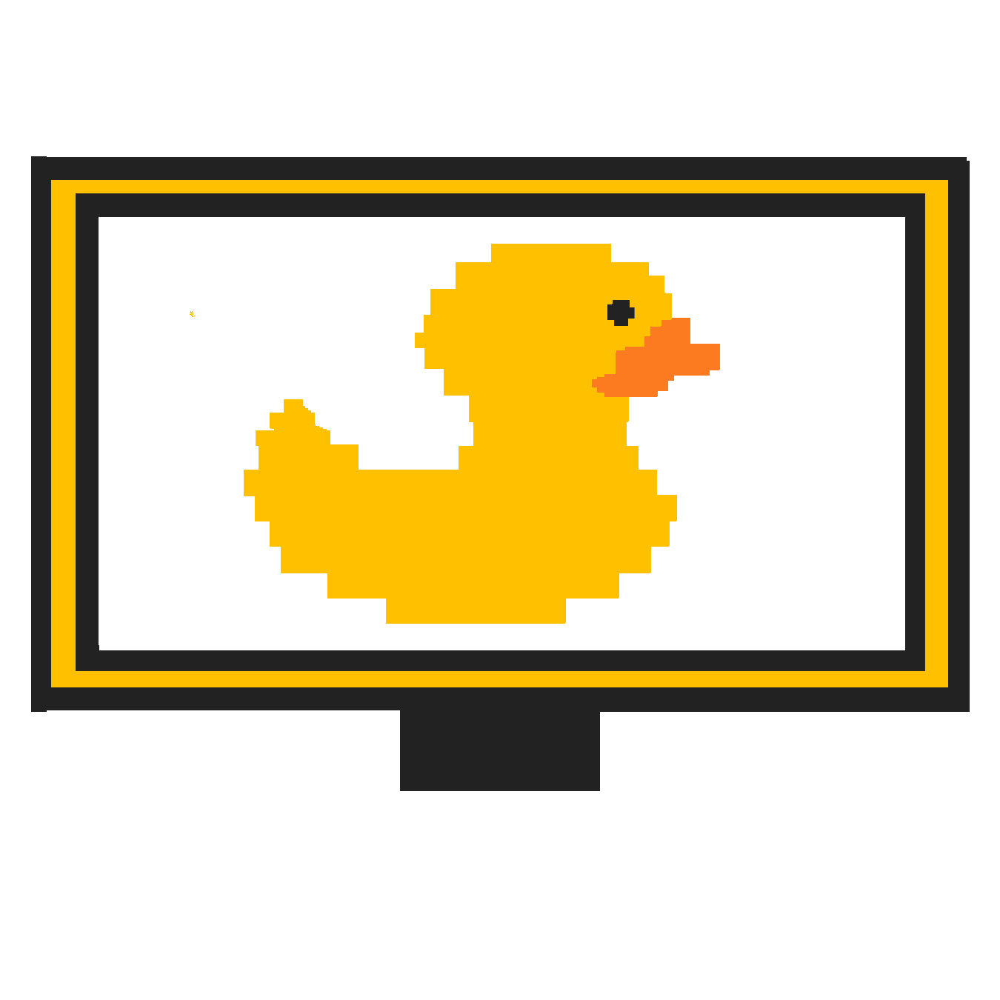
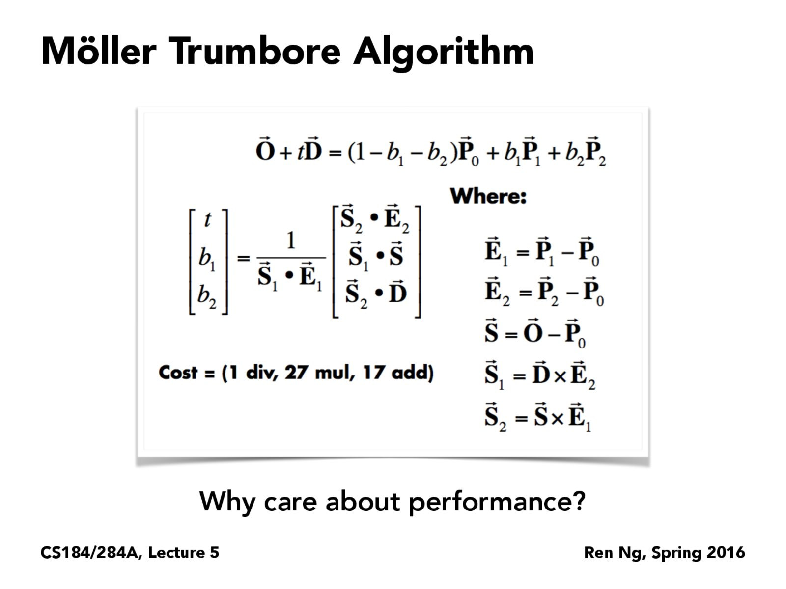
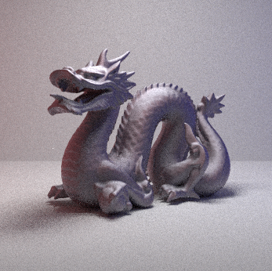

- Walden
- Only Love
- The Loop
- Ray Generation & Intersection
- Bounding Volume Hierarchy
- Direct Illumination
- Indirect Illumination
- Adaptive Sampling
- Mirror & Glass Material
- Microfacet Material
- Environment Light
- Depth of Field

Rasterizer - C++ implemented image rasterizer – performs supersampling, hierarchical transforms, and texture mapping with antialiasing on SVG files and converts to 2D image.
MeshEdit - C++ implemented 3D model mesh application; load and edit basic COLLADA mesh files (used by many major modeling packages and real time graphics engines).
PathTracer - C++ implemented, based on Physically Based Rendering (Pharr & Humphries)

E-Minor Engine - OpenGL simulator, supports textures, model loading, gameplay, and lighting.
Here are some notes I have done for UC Berkeley's CS184 Computer Graphics and Imaging course. (I am currently typing up some of the notes. these are really crude and do not have proper citation at the moment).
(pdf version)
3.1 – Introduction to Ray Tracing
Ray tracing is a technique for rendering images by following the path of a ray of light and simulating the effects of its interaction with objects in a 3D scene. The resulting rendered image is realistic, since it follows a physically based model in which light interacts with objects in the physical world. Consider a ray of light as a stream of photons. This ray propagates through space until it hits a surface, which interrupts the stream. The surface either absorbs, reflects, or refracts the ray. For our purposes, light travels in straight lines. Light rays do not interfere with each other if they do happen to cross. Light rays travel from light sources to the eye.An early attempt at ray tracing was done by Arthur Appel in 1968 with ray casting. The main idea behind ray casting is that for each pixel, trace a ray from the eye (camera) through that pixel, and find the first object that intersects with that ray. The material properties of the intersected surface determine the effect of the light in the scene, and then determine the shading of this object.
Recursive ray tracing is also possible. A ray of light can affect more than one surface; it can bounce off or even go through other surfaces in a scene. The value of this solution is more apparent for surfaces such as metal or glass. A ray is defined by its origin position o, t time (with range [0, ), and a unit direction vector d. It follows that this is the ray equation (in parametric form):
Thus, r is a function of a time t giving the point along a ray. In order for this ray to interact with a scene, this ray needs to hit faces of object. Each face can be represented by a plane, which in a 3D space is defined by a normal vector and a point on that plane. Consider the equation for a plane:
where p’ is any point on the plane and N is the normal vector. Now we can set up the intersection.
Accelerating Ray-Surface Intersection
Now that intersections are possible, there is a way to optimize the process. It would be naïve to run the algorithm #pixels x #objects times. One way to avoid this is to use bounding volumes which basically binds a complex object with a simple box volume. The object will be fully contained within this box volume, and it follows that if the ray does not hit this box volume, it will not hit our complex object. There are 6 potential sides that a ray could hit our box volume.
3.2 - Radiometry and Photometry – The Physics of Light
3.2.0 – Overview
In order to achieve physically based rendering, we need to adopt a framework based in physical properties of light. Radiometry provides a measurement system and units for illumination. It allows for the measure of the spatial properties of light. It follows that this will allow us to perform light calculations in a physically correct manner. What is light? In the real world sense, light is created by a physical process that converts energy into photons. Each photon carries a small amount of energy. Over some time, light consumes some amount of energy, Joules. Some is turned into heat, some into photons. Exposure, is the enrgy of photons hitting an object (film, sensors, sunburn, solar panels, etc.). In computer graphics, we basically assume a “steady state” of flow, that is the rate of energy consumption is constant, so flux (powere) and energy are often interchangeable.3.2.1 – Foundations
Before being able to solve the rendering equation, a few foundational units and concepts shall be reviewed. A reader familiar with the material can skip this section. An angle of a circle is the ratio of the subtended arc length to radius : A solid angle of a sphere is the ratio of the subtended area to radius squared :
A solid angle is a 2-dimensional angle in 3-dimesional space that a object subtends at a point. It is a measure of how large an object appears to an observer at that point. The unit we are most interested in solving the rendering equation are differential solid angles.
The direction vector is . To be isotropic is to have the have the physical property that has the same value when measured in different directions. So an Isotropic Point source is a point that emits light in all directions equally.
3.2.1 – Irradiance and Radiance
Irradiance (illuminance) is the power per unit area incident on a surface point.
Radiance is the fundamental field quantity that describes the distribution of light in an environment. Radiance is the quantity associated with a ray. Rendering is all about computing radiance. Radiance is invariant along a ray in a vacuum.
3.2.1 – Irradiance and Radiance
3.3 - Monte Carlo Integration
The following is text from another textbook, simply for fluff, and design process. Although the cursor will never fall off the left end, it will often wander off the right end of the string. In this case we think that the cursor scans a U, which of course may be overwritten immediately. This is how the string becomes longer-a necessary feature, if we wish our machines to perform general computation. The string never becomes shorter.
Since 8 is a completely specified function, and the cursor never falls off the left end, there is only one reason why the machine cannot continue: One of the three halting states h, "yes", and "no" has been reached. If this happens, we say that the machine has halted. Furthermore, if state "yes" has been reached, we say the machine accepts its input; if "no" has been reached, then it rejects its input. If a machine halts on input x, we can define the output of the machine M on x, denoted M(x). If M accepts or rejects x, then M(x) = "yes" or "no", respectively. Otherwise, if h was reached, then the output is the string of M at the time of halting. Since the computation has gone on for finitely many steps, the string consists of at>, followed by a finite stringy, whose last symbol is not aU, possibly followed by a string-of Us (y could be empty). We consider stringy to be the output of the computation, and write M(x) = y. Naturally, it is possible that M will never halt on input x. If this is the case we write M(x) =/.
3.4 - Global Illumination
Fluff - - It is amazing how little we need to have everything! Viewed as a programming language, the Turing machine has a single data structure, and rather primitive one at that: A string of symbols. The available operations allow the program to move a cursor left and right on the string, to write on the current position, and to branch depending on the value of the current symbol. All in all, it is an extremely weak and primitive language. And yet, we shall argue in this chap- ter, it is capable of expressing any algorithm, of simulating any programming language.
From this initial configuration the machine takes a step according to 8, changing its state, printing a symbol, and moving the cursor; then it takes another step, and another. Note that, by our requirement on 8(p, t>), the string will always start with at>, and thus the cursor will never "fall off" the left end of the string.
3.5 - Material Modeling
Fluff - - It is amazing how little we need to have everything! Viewed as a programming language, the Turing machine has a single data structure, and rather primitive one at that: A string of symbols. The available operations allow the program to move a cursor left and right on the string, to write on the current position, and to branch depending on the value of the current symbol. All in all, it is an extremely weak and primitive language. And yet, we shall argue in this chap- ter, it is capable of expressing any algorithm, of simulating any programming language.
3.3 - Monte Carlo Integration
The following is text from another textbook, simply for fluff, and design process. Although the cursor will never fall off the left end, it will often wander off the right end of the string. In this case we think that the cursor scans a U, which of course may be overwritten immediately. This is how the string becomes longer-a necessary feature, if we wish our machines to perform general computation. The string never becomes shorter. Since 8 is a completely specified function, and the cursor never falls off the left end, there is only one reason why the machine cannot continue: One of the three halting states h, "yes", and "no" has been reached. If this happens, we say that the machine has halted. Furthermore, if state "yes" has been reached, we say the machine accepts its input; if "no" has been reached, then it rejects its input. If a machine halts on input x, we can define the output of the machine M on x, denoted M(x). If M accepts or rejects x, then M(x) = "yes" or "no", respectively. Otherwise, if h was reached, then the output is the string of M at the time of halting. Since the computation has gone on for finitely many steps, the string consists of at>, followed by a finite stringy, whose last symbol is not aU, possibly followed by a string-of Us (y could be empty). We consider stringy to be the output of the computation, and write M(x) = y. Naturally, it is possible that M will never halt on input x. If this is the case we write M(x) =/.
3.4 - Global Illumination
Fluff - - It is amazing how little we need to have everything! Viewed as a programming language, the Turing machine has a single data structure, and rather primitive one at that: A string of symbols. The available operations allow the program to move a cursor left and right on the string, to write on the current position, and to branch depending on the value of the current symbol. All in all, it is an extremely weak and primitive language. And yet, we shall argue in this chap- ter, it is capable of expressing any algorithm, of simulating any programming language.
From this initial configuration the machine takes a step according to 8, changing its state, printing a symbol, and moving the cursor; then it takes another step, and another. Note that, by our requirement on 8(p, t>), the string will always start with at>, and thus the cursor will never "fall off" the left end of the string.
3.5 - Material Modeling
Fluff - - It is amazing how little we need to have everything! Viewed as a programming language, the Turing machine has a single data structure, and rather primitive one at that: A string of symbols. The available operations allow the program to move a cursor left and right on the string, to write on the current position, and to branch depending on the value of the current symbol. All in all, it is an extremely weak and primitive language. And yet, we shall argue in this chap- ter, it is capable of expressing any algorithm, of simulating any programming language.
Overview

How do 3D scenes simulate the illusion of light? One technique is pathtracing! In the virtual 3D space, there are models with surface material properties, affected by direct and indirect lighting. Pathtracing partitions the rendering equation into two parts: direct and indirect illumination.
In english, the outgoing radiance is equal to emitted radiance plus the integral over the hemisphere of the incoming radiance multiplied by the BRDF and a cosine factor.
This recursively describes the propogration of light in a scene. For each bounce of light, the interaction is computed based on the BRDF. That is, for direct illumination (only one bounce of light) - sample the light and calculate that light sample's contribution to the shading at some point. Indirect illumination (more than one bounce of light) goes beyond that; sample the BRDF of the first bounce to another location in the scene (thus leading to a new intersections). It is at these new intersections we repeat these recursive computations until we meet some termination.
I know what you're thinking, "but Ricky, isnt this computationally expensive?" Why yes it is, but there are plenty of optimizations. Consider the bounding volume hierarchies structure that contain bounding boxes. these structures are taken advantage of in order to optimize render calculations. Different Monte Carlo sampling techniques also lead to faster render times.
From a high level, this is what the code does:
1) A 3D collada file is parsed.
2) The Pathtracer GUI is created, providing OpenGL scene information.
3) Once the GUI takes input (number of samples, focal distance, ..), the scene is partitioned with BVHs, preparing for the rendering process.
4) The scene is divided into tiles. They are then put into a queue.
5) A thread processes a tile from the queue. For every pixel in a tile, the pathtracing starts the actual rendering.
As tough as this project was, I thouroughly enjoyed learning the material, so I purchased a copy of the book Physically Based Rendering (Pharr and Humphreys), which I also referenced.
Part 1: Ray Generation and Intersection
We want to represent rays of light, and their interactions with a given scene. To begin, we want to construct a way for these rays to interact in a scene, but not necessarily compute physically based shading.|

|
M.T. takes advantage of the fact that triangles belong to a single plane. With barycentric coordinates, if a ray intersects with a triangle, it will do so at one or between two points of the triangle, and in turn it can find a point P on the triangle.

|
|
Part 2: Bounding Volume Hierarchy
Using uniform grids in order to seperate primitive and to determine where a ray will intersect can be quite inefficeint. Fortunately BVH (bounding volume hierarchies) can prevent the "Teapot in a Stadium"" problem that arises from using uniform grids. These non-uniform spatial partitions are a much smarter way to store information about the location of these primitives. It is necessary to go through all of the primitives and determine if the current batch fit the max_leaf_size. Otherwise we would want to recurse, in order to properly split the primitives. So a threshold must be generated. From the bbox's extent, which every axis has the highest value will be the axis we choose. Then the axis value of the centroid box's serves as a threshold. Depending on how the axis values of the other primitives related to the threshold (less than or greater than), they will either be put on the left or right list. This is essentialy how the recursion works.
With the newly constructed BVH tree, more efficient intersections are possible. First, it determines if a ray has intersected the bounding box of the current node. In the case that it doesnt, it follows that the ray will not intersect with any of the primitives of the BVH. Early termination is possible! Otherwise, each of its primitives needs to be checked in order to retrieve the closest intersection and return true if we have hit anything at all. If the node that was being checked is not a leaf, recurse through its left and right children and determine if there is a hit.

|

|

|

|
Part 3: Direct Illumination
The surface of a 3D model can have properties of physical surfaces. For example, a diffuse material is one that spreads lights equally in all directions (this is not common in the physical world, but a close approximation are chalk boards and matte paint). In addition to diffuse material, glossy specular and perfect specular are also common surface types. These materials are accomplished with BSDFs (bidirectional scattering distribution function), an umbrella term for BRDFs and BRTFs. These are mathematical descriptions of light sccattering properties of surfaces (Veach).The path tracer now has a physically based material to render, but that means nothing if direct illumination is not possible. estimate_direct_lighting emulates the effect of a direct light on a particular surface (diffuse in this case). This function calculates an estimate of the direct lighting on a point hit by a ray. The function sums over all of the light sources, taking samples from the surface of each light, computing the incoming radiance from those sampled directions. It then converts those to outgoing radiance using the BSDF at the surface.
If the light is a delta light, only one sample would need to be taken, otherwise there would be ns_area_light samples. A call to sample_L finds the point of contact, returning the radiance, the wi direction, distToLight point of contact (hit_p), and pdf (probability density function) that was calculated with wi. Now for every light sample, the wi direction returned by the sample is in world space, but in order for it to be passed into the BSDF it needs to be in object space (i.e. w20*wi). Now that the coordinate is in object space, it needs to be ensured that it is not negative, which in that case it means the point lies behind the surface. A shadow is casted to determine if it intersect with BVH. If it does not intersect the irradiance of the light is calculated along with the BSDF and then divided by the PDF to reduce bias.
The following bunnies have only 1 sample per pixel, but a varying amount of light samples.


Consider a scene with 64 image samples and 1 light sample. Now consider the same scene with 1 image sample and 64 light samples. The latter will be noisier, however only in some regions. Why is that? Only one image sample is not enough for geometry that that is smaller than a pixel (sub pixel features). Wont be as noisy since we sampled the light enough. A good compromise is a scene sampled with 8 image samples and 8 light samples. Its much master than the first setting proposed since the intersection calulation for image samples can be terminated once a target is hit, wheras light samples could benefit from more samples.
Part 4: Indirect Illumination
The start of estimate_indirect_lighting is similar to that of ‘direct’. ‘Russian roulette’ is used to determine the BSDF on the surface, and to determine which samples are to be discarded. The probability is multiplied by 11 and then added 0.049 to make sure the rays weren't cut off too short / cut off prematurely. The probability should have a value between 0 and 1. For more randomness, a coin flip function takes in the ray probability and determines if it should cast a shadow. Now, the origin of the shadow ray is offset by EPS_D to make sure that the same region of light is not sampled more than it should. trace_ray is used to recursively trace this ray, forming an approximation for its incoming radiance. The includeLe parameter is set to isect.bsdf->is_delta() since emission is not included in the direct lighting calculation for delta BSDFs. This incoming radiance is converted into an outgoing radiance estimator; it is scaled by the BSDF and a cosine factor, then divided by the BSDF pdf and one minus the Russian roulette termination probability. It was a little upsetting trying to get the indirect lighting to show up when I forgot to set the depth of a ray to the max_ray_depth (that prevented the actual indirect light from showing up).


|

|
Part 5: Adaptive Sampling
An increase in the number of samples results in less noise (the wonders of higher frequency rates :] ). It follows that this improved rate will increase the render time. But of course there are solutions; adaptive sampling allows a reduction in noise, while still being more effecient than just an unoptimized increase in samples. The key is to focus on samples in select parts of the scene, those that end up being more difficult. This implementation determines if the illuminance of a pixel converges. Namely, the mean and the variance are calculated for calculation (light illuminance and light illuminance squared).
Red and blue colors represent high and low sampling rates. Sampling rates are computed as the ratio between the actual number of samples and the maximum number of samples allowed.
If a pixel has reached a point where its average illuminance is bounded by some tolerance of its expected illuminance, then it does not need to trace more rays. One frustrating part, while rendering on my (weak) computer, the rate would only come out as a solid color. This was due to rendering at a low rate. This low rate prevented a higher concentration of sampled in the ~difficult areas of the scene. But luckily, using the strong lab computers and setting up a high sample render ensured the implementation was working.

|

|
|
|

|
Second Half of project - Overview
DISCLAIMER: the write up portion of this half of the project is still in the works.
This section concludes the pathtracer project, a basic but effectice ray tracer. First mirror and glass material surfaces were accomplished. I can't look at glass in real life the same way anymore. Then microfacet material, which work by statistically modeling light from a bigger collection of microfacets (PBRT). And then an attempt at hollywood magic was done by creating environment lights, which basically means taking exr images and having them in a sense project in the background of a scene, and serve as light sources that can interact with the surfaces on the model (probably the most challenging portion of this endeavor). And finally a ray tracer would not be complete without the ability to play with depth of field. This portion made me forget my final renders were derived from 3D models as opposed to an actual image of a real life dragon in a cubic room. Overall this was a really informative project, and what I got in the end was a new appreciation for light and computer graphics as a whole. I would not have finished this without referenceing Physically Based Rendering.
Part 1: Mirror and Glass Materials
Physically based rendering would not be complete without emulating the way light reflects and refracts on mirror and glass surfaces. In order to accomplish a mirror-like surface, it need be modeled with perfect specular reflection.For examplel MirrorBSDF::f() simply returns an empty Spectrum(), as it is safe to assume that a wi direction that was not created using sample_f() has no chance of being equal to the reflection of wo. In order to accomplish a glass-like surface, specular reflection and transmission are at its core. These are weighted by Fresnal terms (or Schlick's approximation) for accurate angular-dependent variation (Pharr&Humphries). We alter the maximum ray depth with values: 0, 1, 2, 3, 4, 5, 100. Once the ray depth is 3 or greater, some interesting artifacts begin to show up. The following sequence have 64 samples per pixel and 4 samples per light each, as well.


Well suppose you shoot more rays into the scene that actually hit the caustics. Also consider that the floor has a diffuse BRDF material. You want to sample it, according to the diffuse brdf. TO get caustics, it should come from light, so it makes sense to want to intersect the ray on that caustic to the sphere, however BRDF has uniform sampling, which ultimatly means there is low chance of hitting out point of interest (the light source). Consider the scenes with max ray depth greater than or equal to 3; these artifacts are apparent in here :( .
Part 2: Microfacet Material
This portion really made the enire physically based rendering idea hit home. At first I was struggling to understand what the spec was trying to tell me, but after testing out this website (https://refractiveindex.info/?shelf=main&book=Si&page=Aspnes), I realized that the physical properties of conductor material can essentially be mapped in computer graphics. This was a lot to take in, as the implementation was pretty challenging. It is safe to assume that rough surfaces can be modeled as a collection of microfacets. According to Pharr & Humphries, surfaces made of microfacets are "essentially heightfield, where the distribution is described statistically". It was trying to understand it statistically that was a bit challenging. Here we alter the alpha value (0.005, 0.05, 0.25, 0.5), which is basically the roughness term.

|
|
|
|

|
Here, it is evident that a hemisphere sampling approach has much more noise than that of a importance sampling approach. For both renders, there are 64 samples per pixel, 1 sample per light, and max ray depth of 5. Again, the only varying factor is the sampling method.The physical properties of copper can be taken advantage of to create less noisy images, and overall replicate copper fairly realistically in CG. Importance sampling is evidently the stronger approach.
|
|

|
|

|
Part 3: Environment Light
Suppose there is a need to create a scene of a forest, or cafe. As opposed to creating an entire scene with actual models in the scene, suppose we have a map that can mimic the illusion of being in that scene. That is, if we have a main mesh we want to focus on and want to place it in another low cost enviroment, we can opt for environment maps. Like adding a matte painting in post production of a film, adding an environment map can be quite effective in create a bigger world. Not only is the image map mapped out over the hemisphere of the scene, it can also create light that will bounce off meshes w/ physically based surfaces quite convincingly.

|
Here are two renders of bunny_unlit.dae and the environment map. One was rendered with uniform sampling. The other one was rendered with importance sampling. Both images have 4 samples per pixel and 64 samples per light in each. The sampling method did not appear to make a visible difference. They are both the same in terms of level/amount of noise.

|

|
Similarly as the previous section, here are two renders of bunny_microfacet_cu_unlit.dae and the environment map. One was rendered with uniform sampling, one with importance sampling. Both images have 4 samples per pixel and 64 samples per light in each. The noise on both surfaces look fairly similar.

|

|
Part 4: Depth of Field
Depth of field is a characteristic that sells the illusion of renders having some physically based setting, or at least, they help sell the idea of these scenes being captured via a camera lens. This was a simple part to implement, however I was having a few miscalculations; when I would reorient the camera in the GUI and then render, I would recieve a completely obscure angle. This was just a matter of not normalizing and conertin world and camera points though. All of the following images were rendered with 64 samples per pixel, 4 lights per sample, max depth ray of 5. Focus Stack - here, all of the images have an apperative size of 0.03, but have varying focus depth. I'd say the one that I find most pleasing is the one with focus depth 1.5.

|
|

|

|
|
|

|
|
|

|

|

|

|
Sweet Victory (2016)
My first 3D animated short! My notable contribution to this masterpiece is Marshmallow (or as like my mom refers to it, "El Bombon"), which I modeled and animated. Learning Maya and other software was so rewarding, and this project helped me explore some of their capabilites. Fun fact: the chocolate fountain was for a time a bifrost simulation with very viscous chocolate. However, the renderfarm hates us and it didn't go as planned. This was made during my semester of UCBUGG, probably the best class I have taken while at Berkeley.
Walden (2016)
The piece was my group's submission for Cal State Long Beach's 24 Hours Challenge; as the name implies this was made in under 24 hours. The prompt was "make a 1 minute short that contains a physical or metaphorical wall". You learn a lot about your animation partners when trapped in a computer lab for 24 hours. We all left with a new connection with one another; and sleep deprivation.
The Only Love a Mans Ever Known (2017)
This project was made for UC Berkeley's Advanced Digital Animation course, CNM190 (Fall 2016 - Spring 2017). In essence, its a short about the pangs of alcoholism, but very layered, revealing new meanings with every view. I worked on the sound effects, lighting, modeling, and post-production for this short. Specifically, the lighting I am proud of is during the liquor store scene, as we experiemented with what felt like every possible variation. I am really proud of the music I wrote for this, especially when I found my peers humming the music at random times. It has won an award at the East LA film festival, and is being considered for other film festivals!
The Loop (2017)
This short was made for the Campus Movie Festival @ UC Berkeley. I worked on the music, some color grading, and story ideas. (I wrote the music in 30 minutes, while waiting to get medication).
STAY TUNED // MORE TO COME //